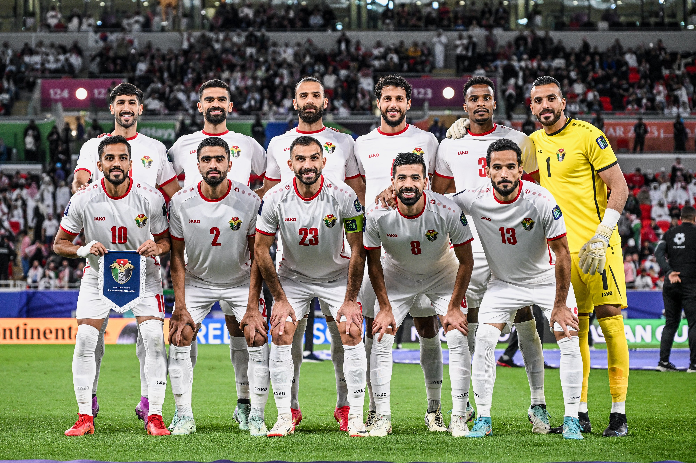

⚽ مقالات الرياضة الأردنية

الكرة الأردنية.. صعود نحو القمة
تحليل معمق لمسيرة الكرة الأردنية بين الإنجازات والتحديات المالية والإدارية.
قراءة المقال ➜


بساط الذهب: التايكوندو الأردنية
رحلة التايكوندو الأردنية من المحلية إلى العالمية والأولمبياد.
قراءة المقال ➜
خارج خطوط الملعب: الرياضة النسائية
كيف أعادت المرأة الأردنية تعريف "المستحيل" رياضياً.
قراءة المقال ➜